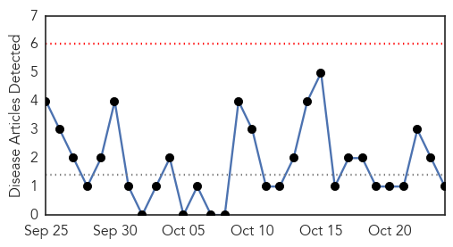
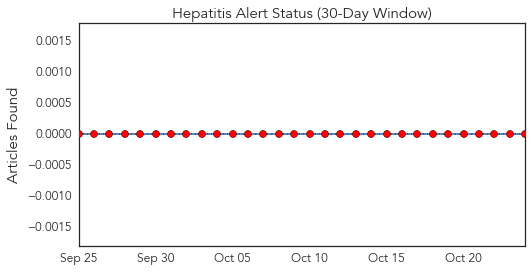
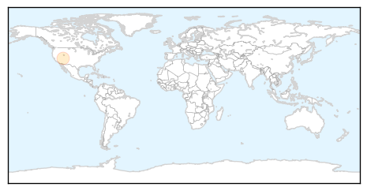
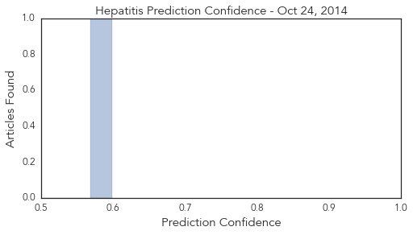
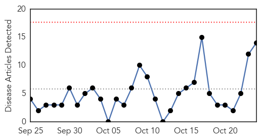
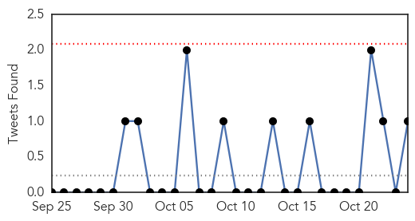
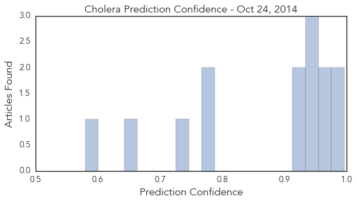

Hepatitis
30-Day Web Trend
0 alerts, 0 warnings

30-Day Twitter Trend
0 alerts, 0 warnings

Article Locations
Article Confidences
Top Articles:
Top Tweets:
-
No tweets found for Oct 24, 2014
Cholera
30-Day Web Trend
0 alerts, 0 warnings

30-Day Twitter Trend
2 alerts, 0 warnings

Article Locations

Article Confidences
Top Articles:
- 0.996
- Death toll from cholera is rising at an alarming rate
- 0.989
- Médecins Sans Frontières (MSF) International
- 0.968
- On anniversary, UN pressed about liability for Haiti cholera
- 0.955
- Cholera outbreak contained in Birim Central
- 0.953
- Haiti Cholera Victims Seek Damages from UN in US Court
- 0.953
- Haiti Cholera Victims Seek Damages from UN in US Court
- 0.953
- Haiti Cholera Victims Seek Damages from UN in US Court
- 0.918
- Fighting cholera outbreak in Agona West
- 0.918
- Bawku battles cholera outbreak
- 0.783
- US Court Hears Pleas for Justice over UN Role in Haiti's Cholera Epidemic
- 0.774
- The Way We Used to Quarantine in New York
- 0.746
- U.S. urges judge to dismiss cholera lawsuit against UN
- 0.646
- Slumdog mapmakers fill in the urban blanks
- 0.580
- U.S. Judge Considers U.N. Immunity in Haiti Cholera Case
Top Tweets:
- 0.512
- RT: .@soniashah traces cholera outbreaks in NewYork 1832 & Haiti 2010.View our interactive maphttp://bit.ly/choleramap http:…